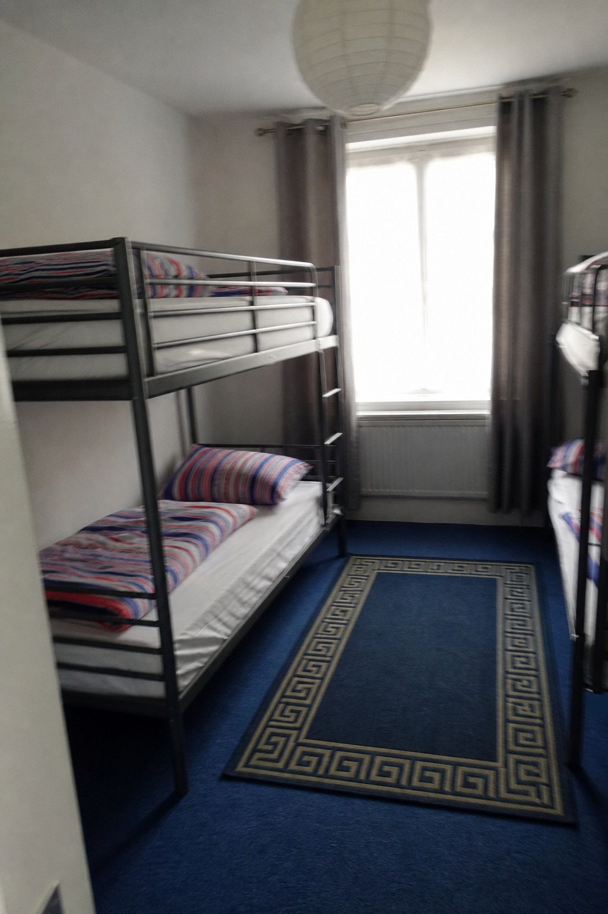
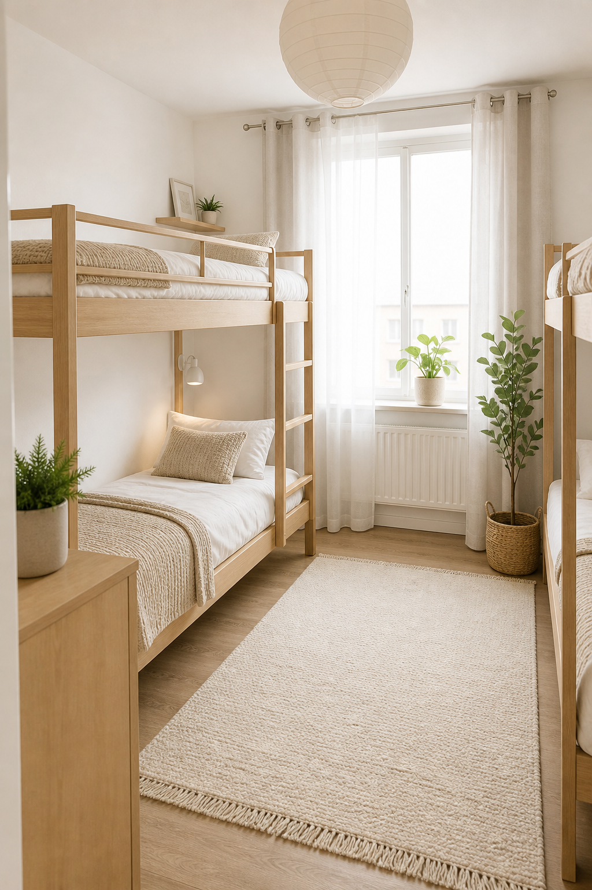
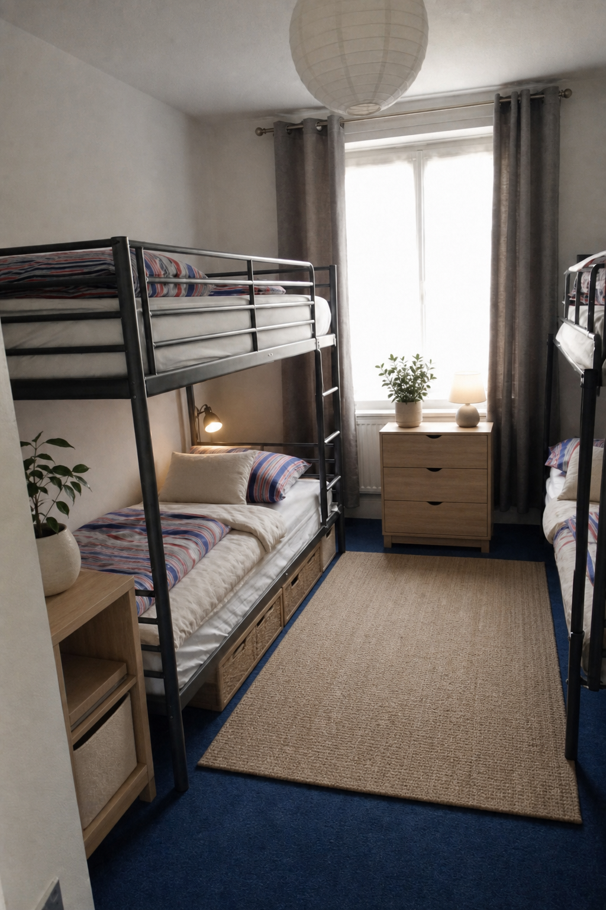
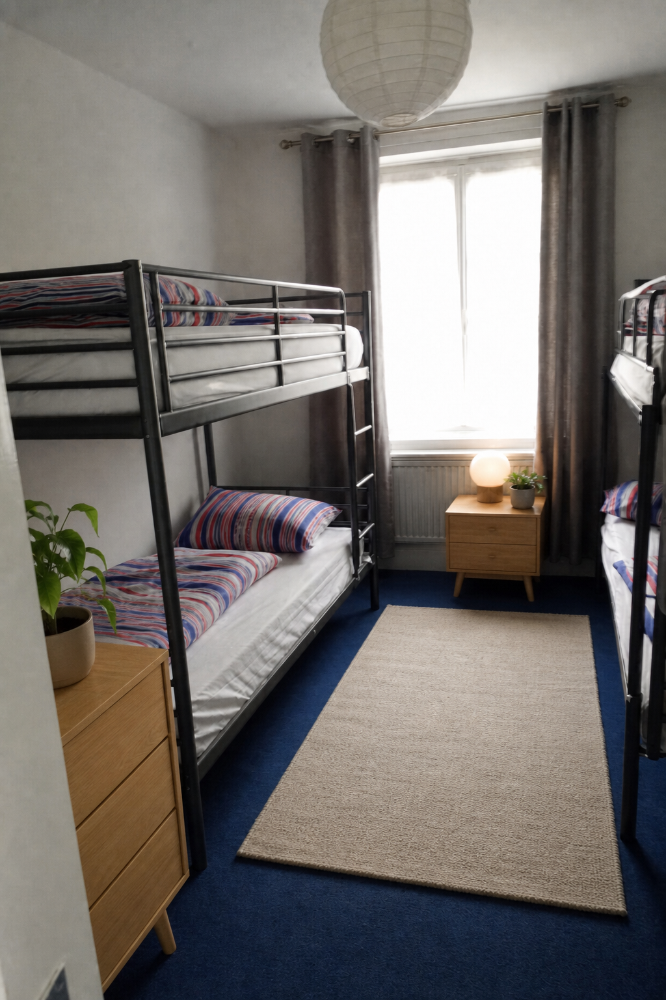
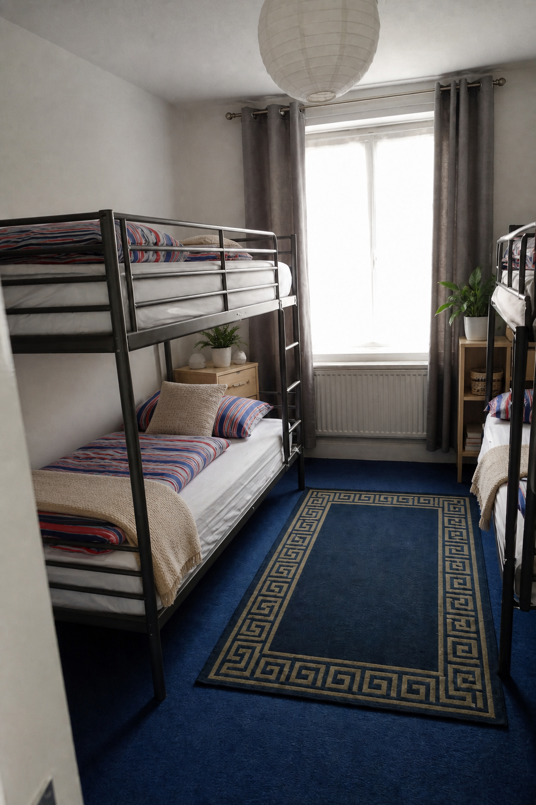
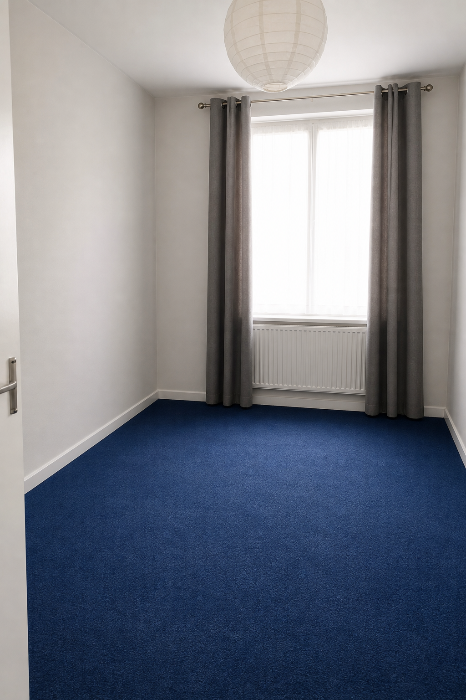
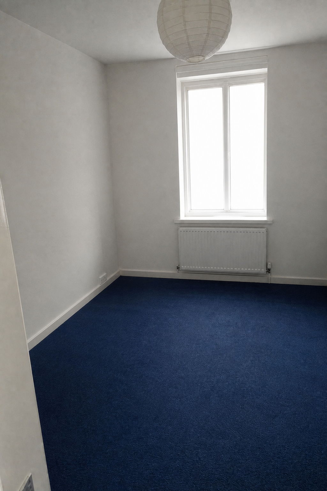
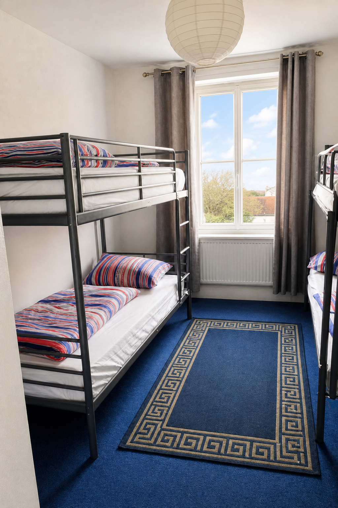
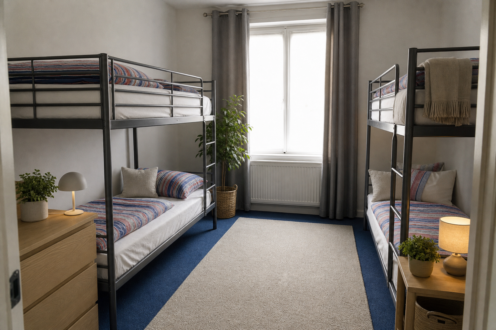
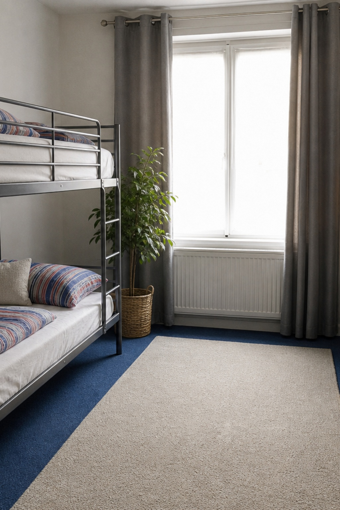

Experiments · pipeline-v2 · 2026-07-11 · not imported by the app
Pipeline v2 bake-off: 2–3 minute renders, hard-no fidelity, any-orientation output
Test subject: a portrait (1024×1536), slightly blurry, occupied bunk-bed bedroom — deliberately
the hardest realistic case: non-landscape dimensions, motion blur, existing furniture that must survive
untouched, a patterned rug, curtains, a radiator, and a blown-out window.
Methodology & honesty notes.
- The photo attached to the task brief could not be persisted into this experiment VM (chat attachments
are not written to disk), so the fixture in
input/ is a faithful recreation of it —
same portrait orientation, same blur, same bunk beds / striped bedding / grey curtains / blue carpet /
Greek-key rug / paper lantern. Every stress property of the original is reproduced.
- This VM has no
CURSOR_API_KEY secret, so the Cloud-Agents boot/poll leg was not re-measured
live here. Production renders run as a Cursor cloud agent that calls an image-edit tool; the bake-off
calls the same class of image-edit tool directly (reference-image edit mode), with byte-identical
production prompts exported from the real code by prepare.mjs
(buildPrompt layer A + buildAgentPrompt layer B). Boot/verify overhead numbers
come from the measured breakdown in docs/image-generation-pipeline.md (prompt-lab timings on
the production stack).
- Every output below was then pushed through the real production post-process
(
lockToDimensions from lib/cursorAgent.ts) by postprocess.mjs;
results in delivered/results.json.
1 · The input

Fixture, after real production preprocess (preprocessInput: EXIF rotate,
long edge ≤2048, JPEG q92) → 1024×1536 portrait. This width×height is recorded and becomes the
delivery contract for the render.
2 · Prompt method bake-off (quality / the moat)
Same image-edit tool, same reference photo — only the instruction changes. Generation wall-clock timed per call.
2a · Stage with furniture (Scandinavian)

V0 · Naive prompt ("virtually stage this bedroom…make it beautiful") — 50s.
FAIL: invented a different room. Oak bunks instead of metal, wood floor
instead of blue carpet, sheer curtains, new window + view, radiator moved/restyled. This is what
commodity AI stagers ship — and exactly what Stagely's hard-nos exist to prevent.

V3 · Minimal constraints (prompt-lab "E": one line of keep-everything) — 64s.
PARTIAL: room and beds survive, but it swapped the Greek-key rug for
sisal, restyled bedding to beige, and added under-bed drawers (resized existing furniture). Too much drift
for MLS disclosure safety.

V2 · Production hard-nos (shipped buildPrompt: DO-NOT list + additions-only +
aspect clause) — 76s. NEAR-PASS: architecture, carpet, curtains, beds all
faithful; one violation — the existing rug was replaced by the style's "pale wool rug".

V2 + one verify-retry (the shipped Step-2 loop: same instruction + one corrective
sentence) — +61s. PASS: Greek-key rug preserved, additions only
(nightstand, shelf, plants, throws). This is the delivered image.
2b · Remove furniture and clutter

V0 · Naive prompt — 54s. PARTIAL: room emptied and
window/radiator kept, but it invented a door handle, brightened the walls and left occupant curtains
(spec says remove them).

V2 · Production hard-nos — 54s. PASS: beds, rug and
curtains removed per spec; carpet and wall reconstructed where the bunks stood; window frame, radiator,
lantern, skirting and camera untouched.
2c · Fix lighting and sky

V2 · Production hard-nos — 70s. PASS: blur and
exposure fixed, window view recovered with sky, and every object — beds, striped bedding, Greek-key rug,
curtains — stays put. Confirms enhance doesn't drift architecture, which justifies removing
its retry entirely.
3 · Output dimensions (portrait in → portrait out)
The old pipeline sent aspect-preserved input into the model but never forced the output back — models
like returning fixed landscape sizes (e.g. 1536×1024), silently cropping portrait uploads. Two defenses now ship
together:
- Prompt-side:
buildAgentPrompt injects OUTPUT DIMENSIONS: … 1024×1536 (portrait)
and buildPrompt carries a DO-NOT-change-aspect hard constraint → the model returns the right
shape in the first place (7 of 8 runs above came back portrait; the 8th was deliberately forced landscape).
- Code-side guarantee:
lockToDimensions cover-resizes the artifact to the exact recorded
input size, so delivery can never mismatch even if the model misbehaves.

Simulated legacy failure: no aspect clause, model pushed to landscape → returned
1536×1024. A portrait phone shot would have been delivered as this on the old pipeline.

Same artifact through the real lockToDimensions → exactly 1024×1536 portrait
again. Usable, but the cover-crop costs the right-hand bunk — which is precisely why the prompt-side aspect
instruction ships too: the lock is the guarantee, the prompt avoids destructive crops.
Verification (postprocess.mjs, real production code): all 8 bake-off outputs delivered at
exactly 1024×1536 — PASS: every delivered image matches the input dimensions exactly.
Landscape and square fixtures behave identically since the contract is "whatever preprocessInput
recorded".
4 · Latency: where 5–7 minutes went, and how it becomes 2–3
| Stage | Old pipeline (measured, docs) | New pipeline (shipped) |
|---|
| Preprocess (sharp) + create agent API | ~5s | ~5s (unchanged) |
| Agent VM boot + repo clone | ~60–90s | ~60–90s (unchanged; API offers no no-repo mode today) |
| Step 1 "study the photo", written inventory | ~30–60s | 0s — deleted. Wrapper: "IMMEDIATELY — as your first action — call your image generation tool". The DO-NOT knowledge lives in the image prompt itself, where the bake-off shows it actually binds. |
| Image generation call | ~60–90s | ~50–76s (measured above, avg 62s) |
| Verify + second generation | Retry allowed for everything, and loose verify language triggered it often — the main reason renders hit 5–7 min | Verify kept but gated: fails only on the explicit hard-no checklist, max 1 retry, "never make a third image", and enhance never retries. Bake-off retry rate: 1 of 4 first attempts (+~61s when it fires). |
| Artifact poll granularity | 5s | 3s (saves a few seconds; free) |
| Timeout | 8 min | 8 min (safety net only) |
| Typical wall clock | 5–7 min | ~2–3 min one-shot (~75%), ~3.5–4 min with the one retry |
|---|
5 · What shipped to stagely.org, and why
1 · Generate-first agent wrapper (buildAgentPrompt, lib/cursorAgent.ts)
Cuts the written-inventory step (~30–60s) with zero quality cost: the V2 image prompt already carries every
constraint, and section 2 shows the constraints bind at the image-tool level, not the essay level.
2 · Gated verify, max one retry — the process stays
You asked to keep "some sort of process", and the bake-off proves why: the V2 first attempt replaced the rug,
and the verify-retry caught and fixed it (section 2a). But unbounded retries were the #1 time sink, so:
fail only on the hard-no checklist, one retry with a one-sentence correction, retry deleted entirely for
enhance (tonal edits don't drift — section 2c).
3 · Hard-nos strengthened (buildPrompt, lib/config.ts)
Added: "DO NOT change the image's aspect ratio or orientation …" and, for staging, "DO NOT remove, move,
resize or restyle anything already present — additions only." Naive vs hard-no comparisons (2a/2b) show this
list is the product moat: without it the model happily rebuilds the room.
4 · Dimension lock end-to-end
preprocessInput records width×height → wrapper announces it → lockToDimensions
guarantees it. Any upload orientation (portrait/landscape/square) is now delivered at its own size.
Mock mode uses the same contract, and the FAQ now promises it publicly.
5 · FAQ additions (app/page.tsx)
"How does the AI staging actually work?" (the supervised process, 2–3 min), an updated "What photos work
best?" (any orientation; sharp & bright is best), and "Will my staged photo keep the same size and
orientation as my upload?" (yes).
6 · 3s artifact polling
Marginal but free — the artifact is grabbed as soon as it appears, before the agent formally finishes.
6 · Considered and rejected (for now)
| Option | Verdict | Why |
|---|
| Parallel racing (spawn 2 agents per render, keep the faster/better) |
Rejected |
Doubles per-render agent cost (~$0.05–0.15 → ~$0.10–0.30) on a 30¢ retail price — the margin doesn't
survive. And p50 latency barely moves since both racers pay the same VM boot. The shipped one-retry keeps the
quality benefit of a second attempt while paying for it only when verification actually fails (~25%). |
| Swap Cloud Agents for a direct img2img API (Fal / Flux Kontext / Gemini edit…) |
Deferred |
Would hit tens of seconds, but deletes the reasoning + verify loop — the "complex being that doesn't
change things" moat — and adds a new vendor, new keys, new failure modes. Revisit only if 2–3 min still loses
deals; the clean seam is to introduce lib/imageProviders/* behind stagePhoto. |
| Different agent model |
Kept composer-2.5 |
experiments/model-comparison already showed it cheapest/fastest with equal image quality —
the image tool does the pixel work; the agent model mostly needs to follow the wrapper. Re-run that harness
if models change. |
| Drop verification entirely (pure one-shot) |
Rejected |
Bake-off says ~1 in 4 first attempts violates a hard-no on hard inputs (2a). Shipping those unchecked
trades the product's core promise for ~60s. |
| Letterbox/pad instead of cover-crop in the lock |
Rejected |
MLS photos can't have black bars. Cover-crop plus the prompt-side aspect clause means real crops are
pixel-scale, not composition-scale (section 3). |
7 · Reproduce
node --experimental-strip-types experiments/pipeline-v2/prepare.mjs
render runs/ with your image-edit tool or the prompt-lab harness
node --experimental-strip-types experiments/pipeline-v2/postprocess.mjs
With a CURSOR_API_KEY available, experiments/prompt-lab/run.mjs --input
experiments/pipeline-v2/input/bedroom_portrait_original.png replays the same fixture through the full
production Cloud-Agents path for live end-to-end timings.